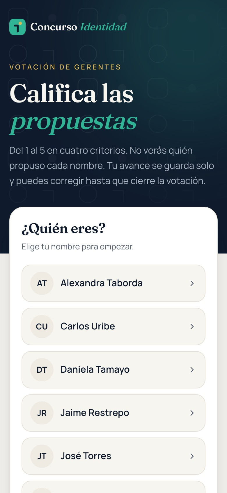
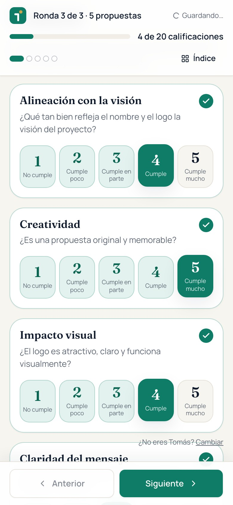
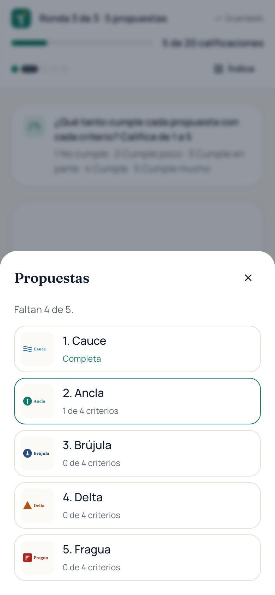
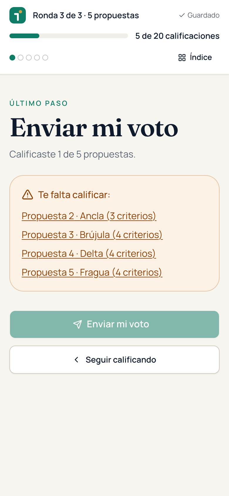
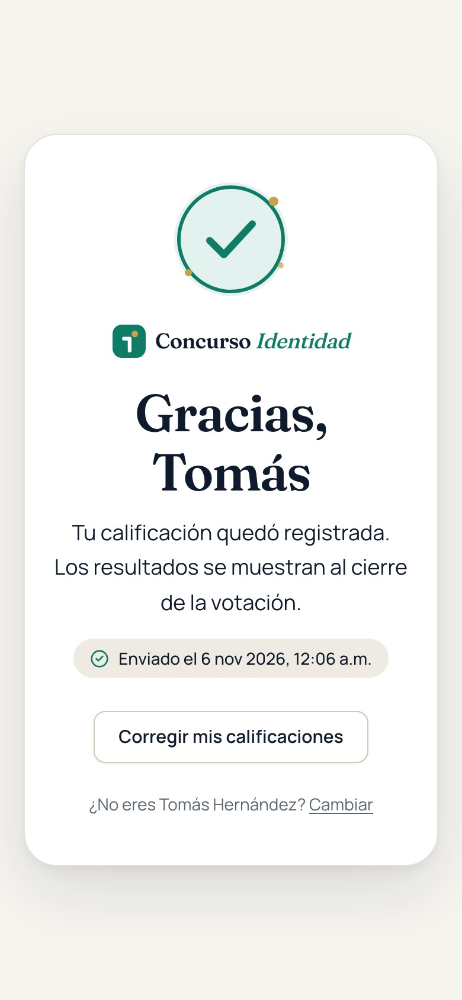
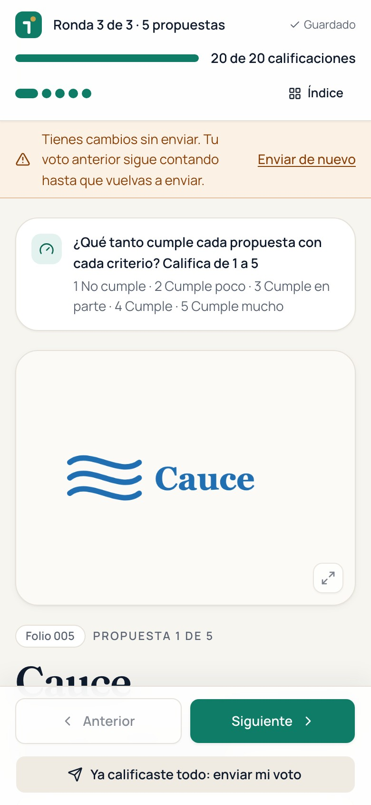
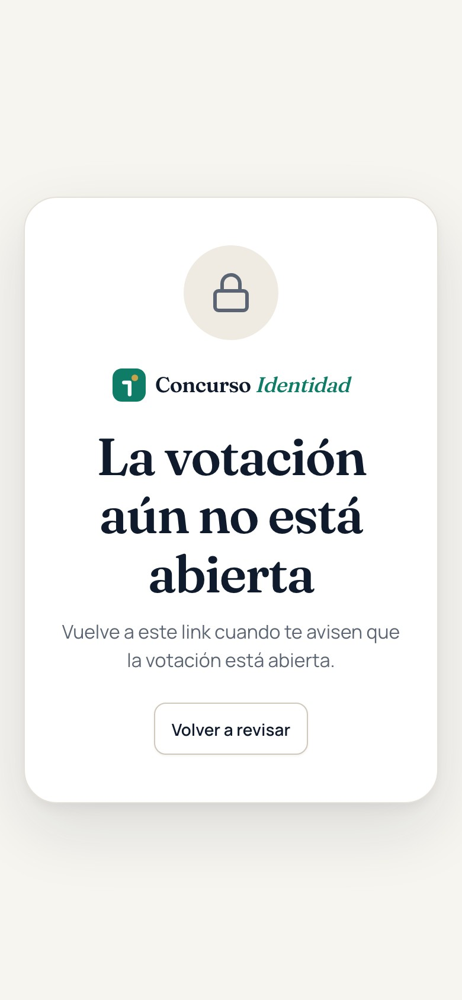
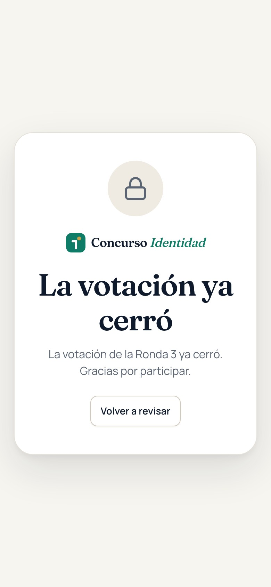

Para los 11 gerentes
Califica las propuestas del 1 al 5 en cuatro criterios y envía tu voto. Toma unos minutos, desde tu celular o tu computadora.
concurso-arclad.vercel.app
Paso a paso · 1 de 2
Entra a concurso-arclad.vercel.app o escanea el QR de la reunión. Toca tu nombre en la lista.

Toca un número del 1 al 5 en cada uno de los 4 criterios. Se guarda solo («Guardado»).

La barra muestra cuántas calificaciones llevas. «Índice» te deja saltar a cualquier propuesta.

Paso a paso · 2 de 2
Si algo quedó sin calificar, la app te dice qué propuesta falta y te lleva a ella.

Cuando todo está calificado, toca Enviar mi voto. Verás la confirmación.

Mientras la votación esté abierta: «Corregir mis calificaciones», cambia y vuelve a enviar.

Referencia
Sí. Cada calificación se guarda al tocarla. Vuelve al link, elige tu nombre y sigues donde ibas, incluso en otro dispositivo.
Sí, mientras la votación esté abierta. Corrige y vuelve a tocar «Enviar mi voto»; cuenta lo último que enviaste.
Sí, con el mismo link. En pantalla grande verás el logo y los criterios lado a lado.
Solo el equipo de People & Culture. Los demás gerentes no las ven; en la reunión solo se muestra quién ya votó y el resultado general.

«La votación aún no está abierta». Vuelve al link cuando te avisen.

«La votación ya cerró». Ya no se pueden hacer cambios en esa ronda.